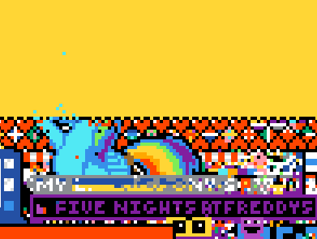
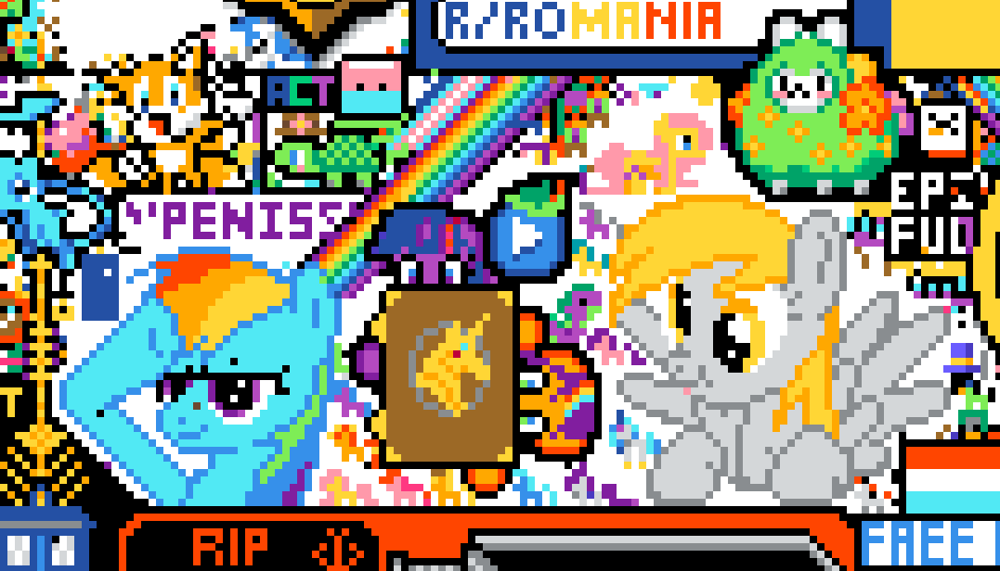
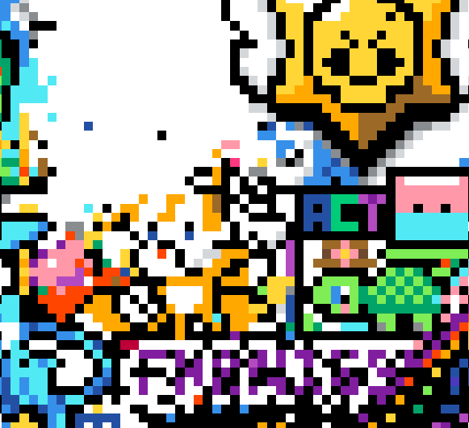
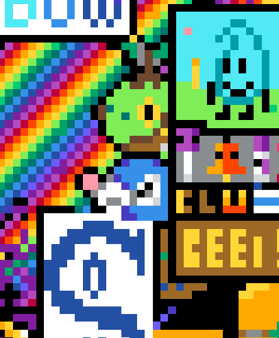
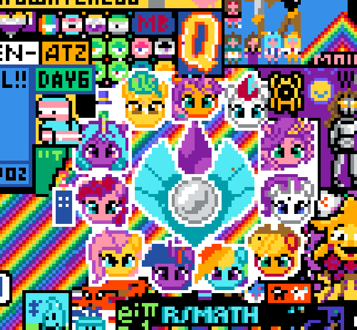
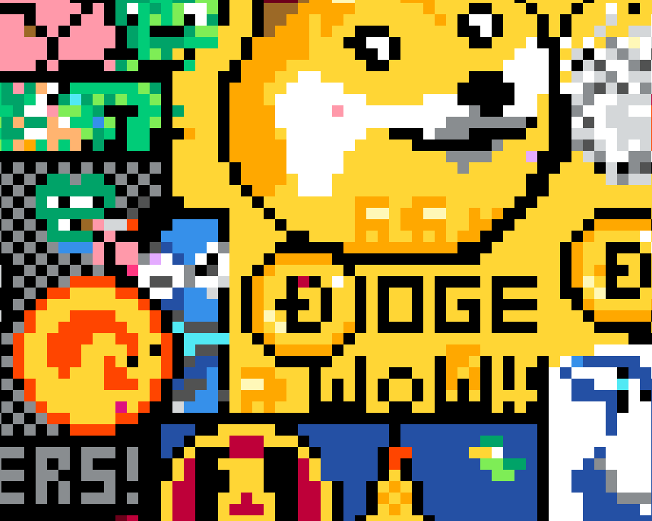
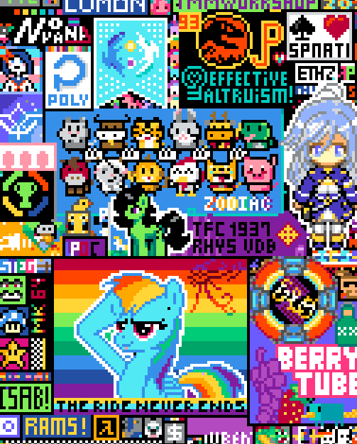

Ceci est un résumé de ce que j'ai effectué pour l'édition 2022 de r/place.
J'ai découvert avec une certaine surprise ce qu'allait être le poisson d'avril de Reddit de cette année, et j'espérait d'ailleur secretement un retour de r/place, auquel je n'ai pas participé en 2017 (j'ai cependant utilisé pxls.space, un trés bon clone, avant que je n'aarrete de part le temps que ça me risquait de me prendre).
Je tiens également à précisé que reddit est l'un des réseaux sociaux sur lequel je passe le plus de temps, probablement derrière Discord et devant Mastodon. Je n'y poste pas grand chose (comme sur les deux autres), surtout des liens vers la lettre d'actualité du rom-hacking de Pokémon Donjon Mystère, qui je publié d'une manière un peu prés hebdomadaire.
Je suis un brony, et j'ai donc décidé dès le début d'aider les bronies. Après une visite rapide sur /r/MyLittlePony j'ai rejoint le serveur Discord de ManeChat, où tout était organisé.
Ayant regardé la vidéo narrant l'incroyable aventure des bronies sur /r/place de 2017 (que j'ai d'ailleurs regardé avant de m'interesser à MLP), je me suis rendu compte que robots et overlay serait incroyablement utile contre les attaques (potentiellement de streamer). Je me suis donc immédiatement lancé dans l'ingénieurie inverse du protocole utilisé, puis partagé mes trouvailles sur le serveur. Je n'ai pas la moindre idée si cela à été utile ou non, mais voici tout de même quelque point interessant sur le sujet :
Le premier jour à surtout été de la recherche sur cet API. À la fin, je crois me souvenir avoir fais un bot primitif, qui ne faisait que placer des pixels sans vérifier s'ils était déja de la bonne couleur. Mais c'était suffisant, et je suis allé dormir.
Comme le drapeau de l'Ukraine s'est mis sur la position de Rainbow Dash, j'ai aussi placé quelque pixels pour aider à réduire l'influence de ce drapeau
J'ai aussi assisté, impuissant, à l'attaque d'Asmongold sur la première Derpy. Je suis ensuite allé dormir
Je me suis révéillé le second jour. C'était un Samedi, avec rien d'important à faire
Aussi, le drapeau de l'Ukraine à été repoussé.
(en revoyant les timelapses, il semble que Rainbow se soit fait attaquer quelque fois, mais ça a été vite reconstruit)
A ce point, j'avait déja quelques compte alternatif, mais pas automatiquement controllé. De talentueuses personnes sur ManeChat ont cependant continué à travaillé sur un overlay (pour navigateur) et des robots (en python). J'ai du mal à me souvenir exactement de quand certaines évolution ont eux lieux avec ça.
Ce que je peut dire, c'est qu'en fin de journée, j'avait une dizaine de robots tournant sur le serveur hebergeant la lettre d'actualité du Rom-Hacking de Pokémon Donjon Mystère (le même que celui qui heberge cette page. Et mon serveur mail. Et tout plein d'autre truc), avec l'aide de Nix et systemd.
C'est également à ce jour que j'ai décidé de rejoindre un groupe de quatre personne décidé à placer un Otaquin sur le canvas. Il à été originallement construit prés de Rainbow Dash, sans l'aide de robots
Puis le canvas s'est agrandi. Les bronies ont donc décidé de placer un cristal (celui qui apparait dans le film G5), ainsi que des visages de poneys de la série sur ce nouveau canvas. Ça à été placé rapidement, mais Asmongold à décider d'attaquer encore les brony, sur le terrain originel, où Rainbow Dash se trouvait. Ce fus la derniere attaque durable (le terrain ayant été remplacé par un plus grand mémorial pour Miura -- je crois que c'est un/le/la créateur·ice de Berserker, mais je n'ait pas plus de détail que ça. Mais ça doit pouvoir se trouver sur internet). L'Otaquin à aussi été détruit dans la foulé.
L'Otaquin à ensuite été reconstruit sur une bordure de la Rainbow Road (route arc en ciel). Il fut fini surprenement rapidement (avec l'aide de bot, utilisant le même code que celui pour protéger les poneys). Quant la plupart de la construction à été finit, je les ait remis à défendre les poneys. Plus tard d'autre personne se sont mise à construire une tête de Tortipouss. Nous avons survécu à l'attaque violette de XqC. (à la fois le Tortipouss et l'Otaquin)
Je me souviens également de l'affaire de Derpy, géré par le groupe My Little Pony Pixel (Si je me souviens bien, c'est un groupe sur pxls.space). J'ai eut l'occasion de travailler avec eux sur ce site. La controverse provenait de leurs aggression avec d'autre terrain (notamment, si je ne me trompe pas d'une communauté de speedrun de MineCraft).
Après m'être réveillé, il me semble que peu de chose ont bougées en rapport avec ce sujet. Ce dimanche fut surtout consacré à l'ajout de robots. Je croix que c'est aussi le premier jours où certain de mes robots ont été bannis de r/place (en ayant un temps d'attente absurde avant de placer un pixel). Il me semble ne pas avoir énormement de progrès du coté brony (si ce n'est l'adition de Trixie au drapeau trans).
Il me semble également que c'est ce jour la où le cristal à été attaqué et remplacé par un emote de XqC. On à eux beaucoup de support de nombreuses communauté (dont OSU), et le cristal à été reconstruit.
C'est également le jour où l'Otaquin à été attaqué par le drapeau Espagnol (extension non géré par la communauté de ce drapeau). Après avoir essayer de le combattre, nous nous sommes replacé à coté de DogeCoin.
C'est également à ce moment là que je me suis interesser d'avantage à Otaquin plutôt que les structure MLP.
Notamment, Otaquin à été attaqué une fois (par des personnes désorganisé, qui ne font pas partie de r/dogecoin_place -- avec qui il à été interessant de discuter), mais ça à été repoussé.
C'était lundi, un jour d'école. Et je dois bien avouer que r/place m'a fortement déconcentré. En particulier, Otaquin à été attaqué à nouveau, et cet fois ci, on à essayer de beaucoup se battre, mais ça à finalement échoué.
Une nouvelle technique utilisé est d'envoyer des message privées aux utilisateurs, leurs priant d'arretter d'attaquer l'Otaquin, et de rejoindre le groupe organisant DogeCoin (nous étant en paix avec eux). De noubreuses personnes m'on informé qu'ils n'aurrait effectivement pas placé de pixel s'ils était informé, mais cela n'a pas apporté les résultat attendu. À un moment, une portion critique d'attaque à été atteinte, et l'Otaquin était irreconnaissable. Cela m'a fait rendre compte qu'il existait un grand nombre d'utilisateur qui n'était pas organisé en communauté (et que presque aucun de ceux-là était des compte alternatif).
C'est également en fin de journée que la taille du canvas à doublé. Nous (l'équipe d'Otaquin) ne nous sommes pas déplacé. Cependant, l'équipe MLP en à profiter pour s'étendre. Et MLPP ont aussi fait une encore plus grande Derpy (toujours en attaquant des communautés).
Je suis donc aller dormir environ deux heurs avant la fin, esperant que les robots et les autres membres du groupes rependront l'Otaquin (et ne connaissant pas l'heure de fin)
Je me suis réveillé. J'ai pris connaissance de la situation et la raison pour lequel le canvas était blanc (sachant que le blanc était la couleur par défaut quand l'image était en train de charger). Il ne restait que trois pixel d'Otaquin, mais les structure d'MLP se portait à merveille.
Cependant, il semblerait qu'au dernier moment, Otaquin à été rajouté à la structure de r/ainbow road. Ce qui veut dire qu'il aura des chances de finir sur la version nettoyé de r/place ( par r/thefinalclean )
J'ai également pris connaissance de la bataille concernant le drapeau français (un autre élève m'en avait parlé le quatrième jour, mais je ne m'y était pas beaucoup interessé). Cela semble un sujet vraiment interessant.
J'ai également soumis ce qu'il reste d'Otaquin à r/placeatlas2 (pour le second emplacement)
Le fait de devoir travailler avec une petite équipe de 4 personnes était source de stress. C'est quelque chose que j'éviterait de faire si cela arriver à nouveaux (et je devrait probalement commencer à travailler sur des robots pour ce cas. Et avec javascript pour minimiser les différences entre navigateur et serveur).
Je pense que la meilleurs chose que m'ait apporté le r/place de cette année à été la découverte du serveur Discord pony.dev. Cela semble être un coin interessant où discuter (en anglais). De plus, il y a un grand nombre d'utilisateur de Rust et de Nix par là.
Et j'espère que cet entrée de blog vous aura plu. N'hésiter à me contacter si vous avez des question ou une remarque sur cette article. (fait amusant : j'ai bricolé un générateur de site web statique en Nix juste pour cet article).